Lire ces wireframes
Un wireframe montre la structure d'une page : l'ordre des zones, leur forme et ce qu'elles contiennent, sans couleurs, sans photos et sans les textes définitifs. On valide ici ce qui est présent sur chaque page et dans quel ordre. Les couleurs, la typographie et les visuels viennent ensuite, avec la direction artistique.
Chaque zone porte un numéro, repris dans le tableau sous la page. Chaque page est montrée sur ordinateur et sur téléphone.
Accueil
| Adresse | / |
|---|---|
| Public | participantes et participants, habitantes et habitants curieux, partenaires |
| Recherche du public | « sécurité sociale de l'alimentation Morlaix » |
| Action principale | voir les prochains événements et trouver les lieux où dépenser ses Buzuk SSA |
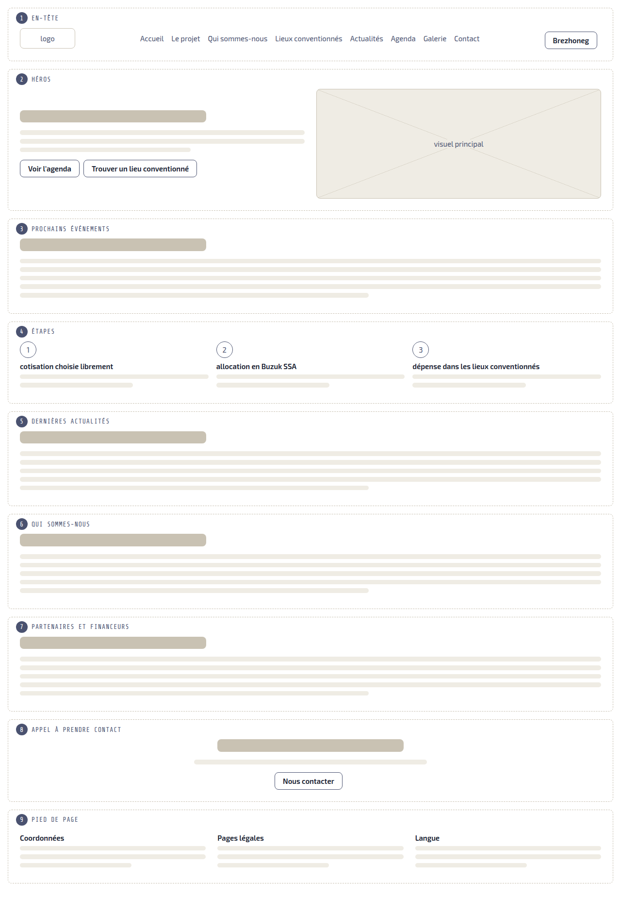
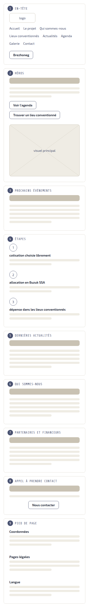
| N° | Zone | Rôle et contenu |
|---|---|---|
| 1 | En-tête | logo, menu (Accueil, Le projet, Qui sommes-nous, Lieux conventionnés, Actualités, Agenda, Galerie, Contact), lien « Brezhoneg » vers la version bretonne |
| 2 | Héros | dire en une phrase qui, quoi, où ; contenu : titre Sécurité Sociale de l'Alimentation, Pays de Morlaix, et devise Pour un droit fondamental et universel à une alimentation saine et durable (site actuel) ; boutons « Voir l'agenda » et « Trouver un lieu conventionné » |
| 3 | Prochains événements | les 3 prochains événements (date, heure, titre, lieu) ; lien « Tout l'agenda » (liste seule, sans inscription) |
| 4 | Étapes | comment fonctionne l'expérimentation en 3 étapes (cotisation choisie librement, allocation en Buzuk SSA, dépense dans les lieux conventionnés) ; lien « Comprendre le projet » |
| 5 | Dernières actualités | les 3 derniers articles (photo, titre, date) ; lien « Toutes les actualités » |
| 6 | Qui sommes-nous | La Collective et les 4 associations accompagnatrices en une phrase ; lien « Découvrir le collectif » ; bloc de texte |
| 7 | Partenaires et financeurs | logos des partenaires puis des financeurs (Région Bretagne, Europe FEADER Leader), sans défilement (variante fixe) |
| 8 | Appel à prendre contact | une question sur la SSA au Pays de Morlaix ; bouton « Nous contacter » |
| 9 | Pied de page | colonnes (Coordonnées, Pages légales, Langue) ; Le Buzuk, 39 bellevue de la Madeleine, 29600 Morlaix, 06 15 06 82 08, ssapaysdemorlaix@mailo.com ; Mentions légales, Confidentialité, Accessibilité, Plan du site ; lien Brezhoneg |
Le projet
| Adresse | /projet/ |
|---|---|
| Public | habitantes et habitants curieux |
| Recherche du public | « comment fonctionne la caisse alimentaire de Morlaix » |
| Action principale | comprendre le fonctionnement et savoir à qui s'adresser pour rejoindre le projet |
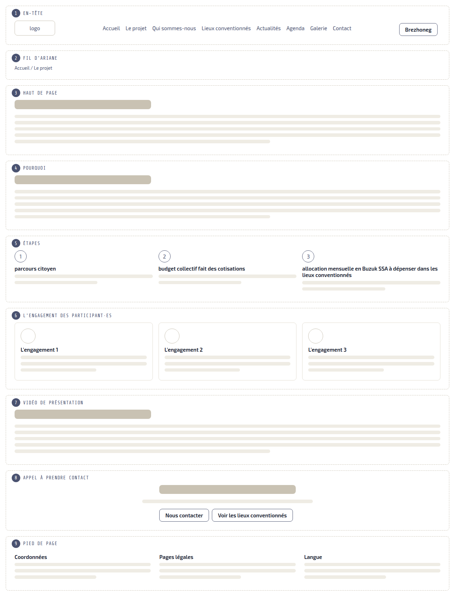
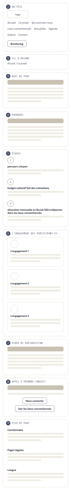
| N° | Zone | Rôle et contenu |
|---|---|---|
| 1 | En-tête | logo, menu (Accueil, Le projet, Qui sommes-nous, Lieux conventionnés, Actualités, Agenda, Galerie, Contact), lien « Brezhoneg » vers la version bretonne |
| 2 | Fil d'Ariane | Accueil, puis la page |
| 3 | Haut de page | titre Expérimentation d'une caisse de l'alimentation sur le Pays de Morlaix, chapô (site actuel) |
| 4 | Pourquoi | les 3 buts de l'expérimentation (droit à l'alimentation pour toutes et tous, système alimentaire plus juste et plus durable, pouvoir d'agir collectivement) ; bloc de texte |
| 5 | Étapes | 3 étapes du fonctionnement (parcours citoyen, budget collectif fait des cotisations, allocation mensuelle en Buzuk SSA à dépenser dans les lieux conventionnés) |
| 6 | L'engagement des participant·es | une réunion et un atelier collectif par mois ; durée d'un an à partir de début 2026 ; bloc de texte |
| 7 | Vidéo de présentation | la vidéo du projet (fichier du site, chargée au clic) |
| 8 | Appel à prendre contact | besoin d'information, écrire à ssapaysdemorlaix@mailo.com ; boutons « Nous contacter » et « Voir les lieux conventionnés » |
| 9 | Pied de page | colonnes (Coordonnées, Pages légales, Langue) ; Le Buzuk, 39 bellevue de la Madeleine, 29600 Morlaix, 06 15 06 82 08, ssapaysdemorlaix@mailo.com ; Mentions légales, Confidentialité, Accessibilité, Plan du site ; lien Brezhoneg |
Qui sommes-nous
| Adresse | /collectif/ |
|---|---|
| Public | partenaires, habitantes et habitants curieux |
| Recherche du public | « qui porte la SSA au Pays de Morlaix » |
| Action principale | savoir qui porte le projet et le contacter |
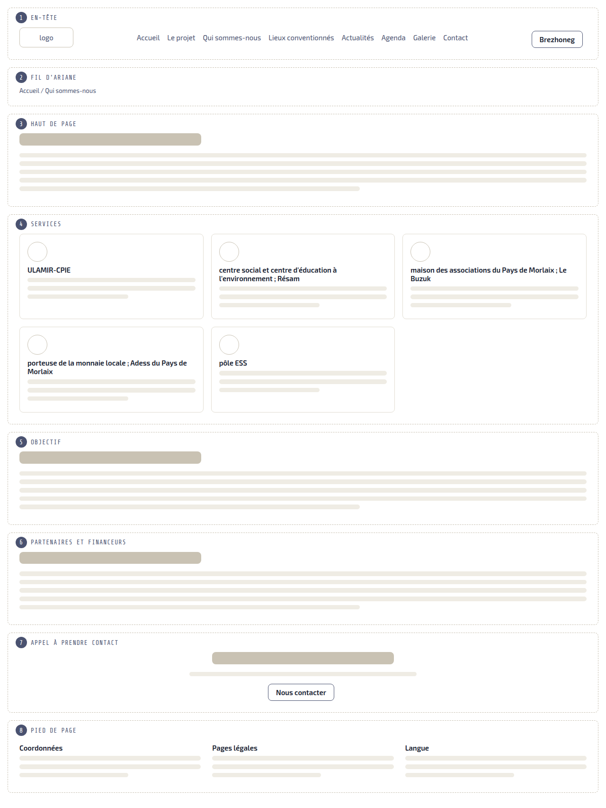
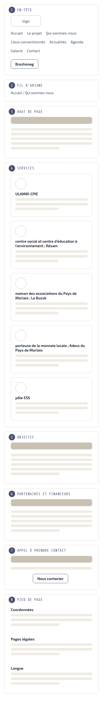
| N° | Zone | Rôle et contenu |
|---|---|---|
| 1 | En-tête | logo, menu (Accueil, Le projet, Qui sommes-nous, Lieux conventionnés, Actualités, Agenda, Galerie, Contact), lien « Brezhoneg » vers la version bretonne |
| 2 | Fil d'Ariane | Accueil, puis la page |
| 3 | Haut de page | titre Qui sommes-nous ?, chapô : La Collective, une trentaine de citoyennes et citoyens du Pays de Morlaix (site actuel) |
| 4 | Services | 4 structures porteuses (ULAMIR-CPIE, centre social et centre d'éducation à l'environnement ; Résam, maison des associations du Pays de Morlaix ; Le Buzuk, porteuse de la monnaie locale ; Adess du Pays de Morlaix, pôle ESS) |
| 5 | Objectif | connecter les initiatives locales autour de l'alimentation et renforcer les coopérations entre acteurs (site actuel) ; bloc de texte |
| 6 | Partenaires et financeurs | logos avec lien vers chaque structure (variante fixe) |
| 7 | Appel à prendre contact | bouton « Nous contacter » |
| 8 | Pied de page | colonnes (Coordonnées, Pages légales, Langue) ; Le Buzuk, 39 bellevue de la Madeleine, 29600 Morlaix, 06 15 06 82 08, ssapaysdemorlaix@mailo.com ; Mentions légales, Confidentialité, Accessibilité, Plan du site ; lien Brezhoneg |
Lieux conventionnés
| Adresse | /lieux-conventionnes/ |
|---|---|
| Public | participantes et participants |
| Recherche du public | « où dépenser ses Buzuk SSA » |
| Action principale | trouver un lieu proche et s'y rendre |
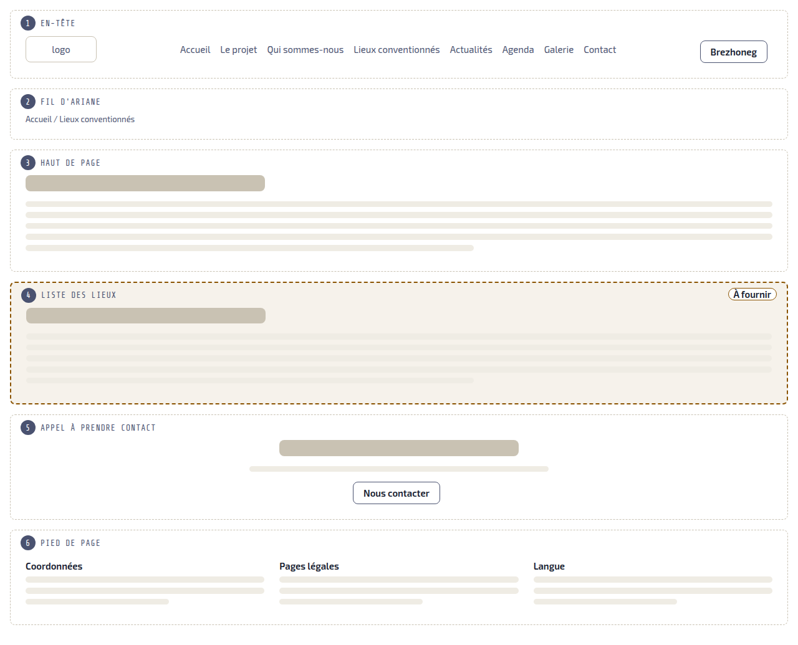
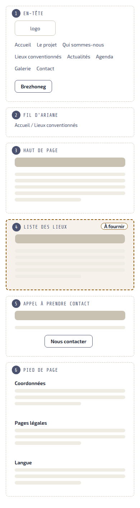
| N° | Zone | Rôle et contenu |
|---|---|---|
| 1 | En-tête | logo, menu (Accueil, Le projet, Qui sommes-nous, Lieux conventionnés, Actualités, Agenda, Galerie, Contact), lien « Brezhoneg » vers la version bretonne |
| 2 | Fil d'Ariane | Accueil, puis la page |
| 3 | Haut de page | titre Où dépenser ses Buzuk SSA, chapô : lieux choisis collectivement au cours du parcours citoyen, d'autres pourront s'ajouter pendant les 12 mois (site actuel) |
| 4 | Liste des lieux | une carte par lieu (nom, adresse, horaires si connus, lien « Itinéraire ») ; à fournir : Géraldine Gabillet |
| 5 | Appel à prendre contact | un lieu à proposer ; bouton « Nous contacter » |
| 6 | Pied de page | colonnes (Coordonnées, Pages légales, Langue) ; Le Buzuk, 39 bellevue de la Madeleine, 29600 Morlaix, 06 15 06 82 08, ssapaysdemorlaix@mailo.com ; Mentions légales, Confidentialité, Accessibilité, Plan du site ; lien Brezhoneg |
Masqué tant que la donnée manque : la liste des lieux (à fournir : Géraldine Gabillet, avant la construction)
Actualités
| Adresse | /actualites/ |
|---|---|
| Public | partenaires, financeurs, médias |
| Recherche du public | « actualités SSA Morlaix » |
| Action principale | lire les dernières nouvelles du collectif |
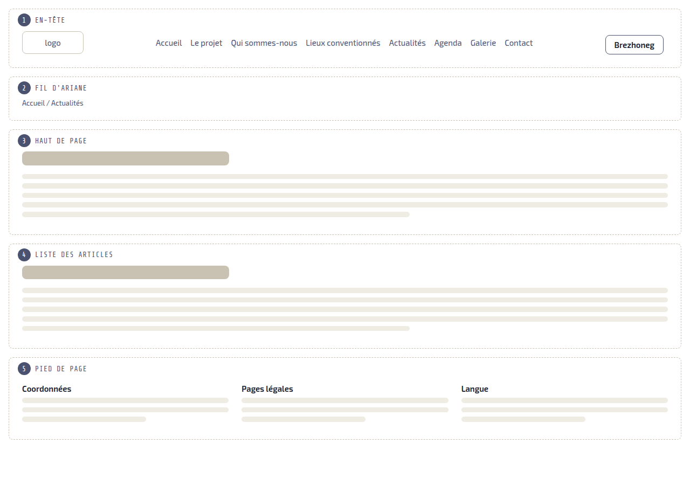
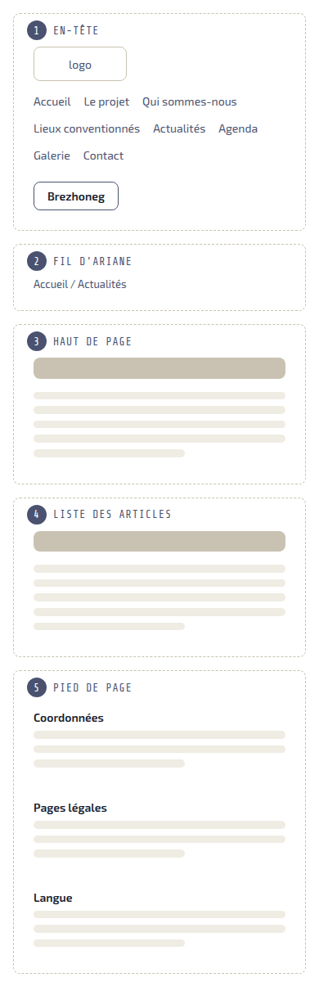
| N° | Zone | Rôle et contenu |
|---|---|---|
| 1 | En-tête | logo, menu (Accueil, Le projet, Qui sommes-nous, Lieux conventionnés, Actualités, Agenda, Galerie, Contact), lien « Brezhoneg » vers la version bretonne |
| 2 | Fil d'Ariane | Accueil, puis la page |
| 3 | Haut de page | titre Actualités |
| 4 | Liste des articles | articles du plus récent au plus ancien (photo, titre, résumé, date), pages suivantes en liens |
| 5 | Pied de page | colonnes (Coordonnées, Pages légales, Langue) ; Le Buzuk, 39 bellevue de la Madeleine, 29600 Morlaix, 06 15 06 82 08, ssapaysdemorlaix@mailo.com ; Mentions légales, Confidentialité, Accessibilité, Plan du site ; lien Brezhoneg |
Article
| Adresse | /actualites/<titre>/ |
|---|---|
| Public | partenaires, médias, participantes et participants |
| Recherche du public | « titre de l'article » |
| Action principale | lire l'article et voir ses photos ou sa vidéo |
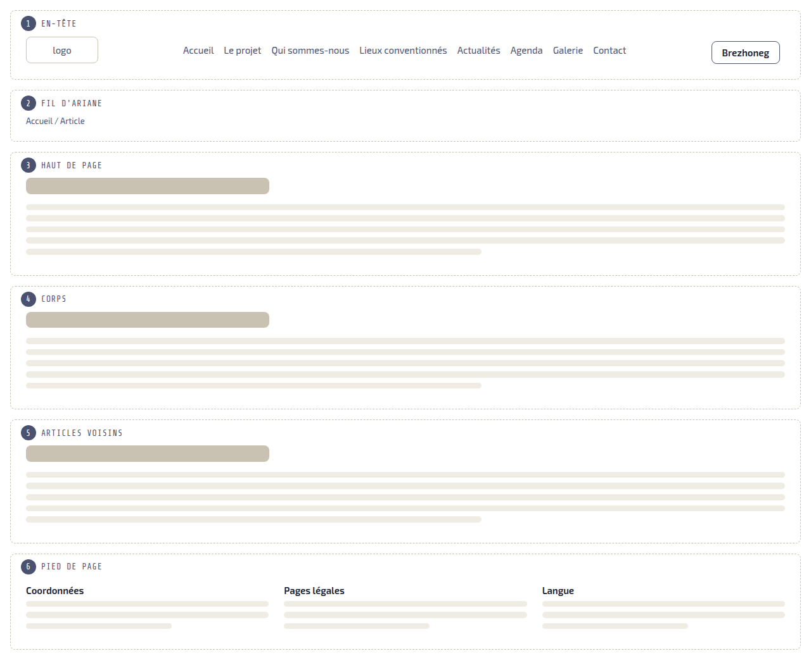
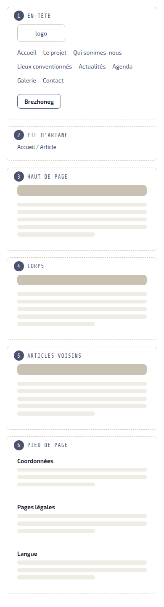
| N° | Zone | Rôle et contenu |
|---|---|---|
| 1 | En-tête | logo, menu (Accueil, Le projet, Qui sommes-nous, Lieux conventionnés, Actualités, Agenda, Galerie, Contact), lien « Brezhoneg » vers la version bretonne |
| 2 | Fil d'Ariane | Accueil, puis la page |
| 3 | Haut de page | titre de l'article, date, lieu s'il existe, résumé |
| 4 | Corps | texte de l'article, photos en galerie, vidéo chargée au clic, liens utiles |
| 5 | Articles voisins | article précédent et suivant, lien « Toutes les actualités » ; bloc de texte |
| 6 | Pied de page | colonnes (Coordonnées, Pages légales, Langue) ; Le Buzuk, 39 bellevue de la Madeleine, 29600 Morlaix, 06 15 06 82 08, ssapaysdemorlaix@mailo.com ; Mentions légales, Confidentialité, Accessibilité, Plan du site ; lien Brezhoneg |
Agenda
| Adresse | /agenda/ |
|---|---|
| Public | participantes et participants |
| Recherche du public | « événements alimentation Morlaix » |
| Action principale | trouver le prochain événement, sa date et son lieu |
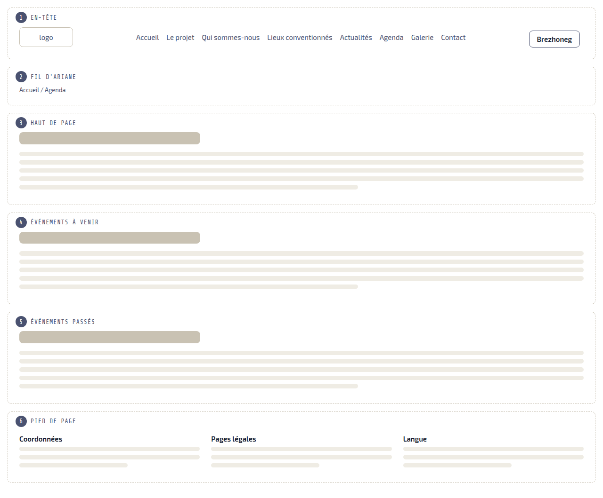
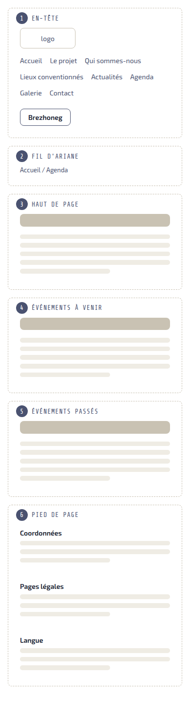
| N° | Zone | Rôle et contenu |
|---|---|---|
| 1 | En-tête | logo, menu (Accueil, Le projet, Qui sommes-nous, Lieux conventionnés, Actualités, Agenda, Galerie, Contact), lien « Brezhoneg » vers la version bretonne |
| 2 | Fil d'Ariane | Accueil, puis la page |
| 3 | Haut de page | titre Agenda ; filtre par public en liens (Tous, Collectif, Expérimentateurs, Pour tous, catégories du site actuel) |
| 4 | Événements à venir | liste par date (date, heure, titre, lieu, public) (liste, sans inscription) |
| 5 | Événements passés | liste repliée |
| 6 | Pied de page | colonnes (Coordonnées, Pages légales, Langue) ; Le Buzuk, 39 bellevue de la Madeleine, 29600 Morlaix, 06 15 06 82 08, ssapaysdemorlaix@mailo.com ; Mentions légales, Confidentialité, Accessibilité, Plan du site ; lien Brezhoneg |
Événement
| Adresse | /agenda/<titre>/ |
|---|---|
| Public | participantes et participants |
| Recherche du public | « titre de l'événement » |
| Action principale | connaître la date, l'heure et le lieu, et s'y rendre |
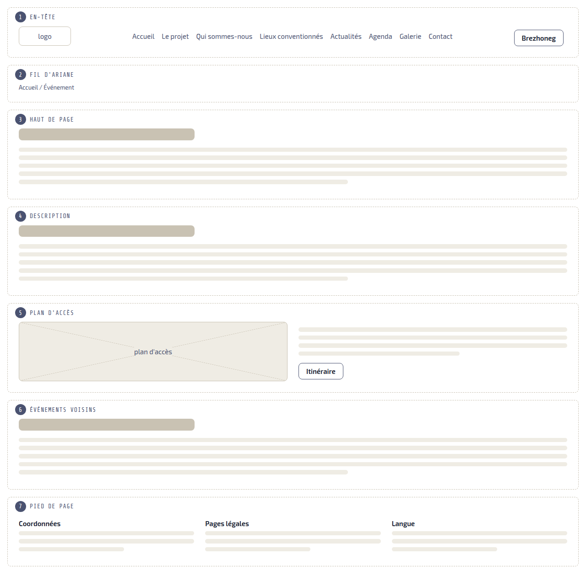
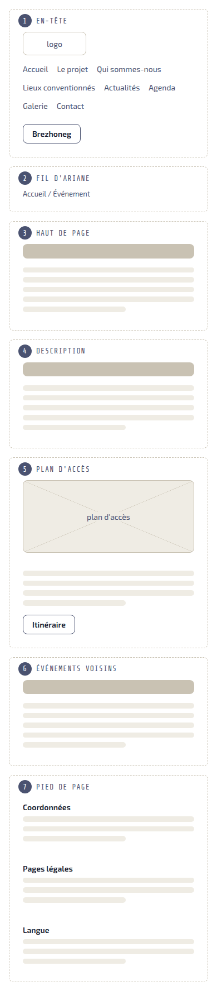
| N° | Zone | Rôle et contenu |
|---|---|---|
| 1 | En-tête | logo, menu (Accueil, Le projet, Qui sommes-nous, Lieux conventionnés, Actualités, Agenda, Galerie, Contact), lien « Brezhoneg » vers la version bretonne |
| 2 | Fil d'Ariane | Accueil, puis la page |
| 3 | Haut de page | titre de l'événement, date, heure, durée, lieu, public |
| 4 | Description | texte de l'événement, informations pratiques et liens ; bloc de texte |
| 5 | Plan d'accès | adresse du lieu et lien « Itinéraire », sans carte interactive ; bloc de texte |
| 6 | Événements voisins | précédent et suivant, lien « Tout l'agenda » ; bloc de texte |
| 7 | Pied de page | colonnes (Coordonnées, Pages légales, Langue) ; Le Buzuk, 39 bellevue de la Madeleine, 29600 Morlaix, 06 15 06 82 08, ssapaysdemorlaix@mailo.com ; Mentions légales, Confidentialité, Accessibilité, Plan du site ; lien Brezhoneg |
Galerie
| Adresse | /galerie/ |
|---|---|
| Public | partenaires, participantes et participants |
| Recherche du public | « photos du collectif » |
| Action principale | parcourir les photos |
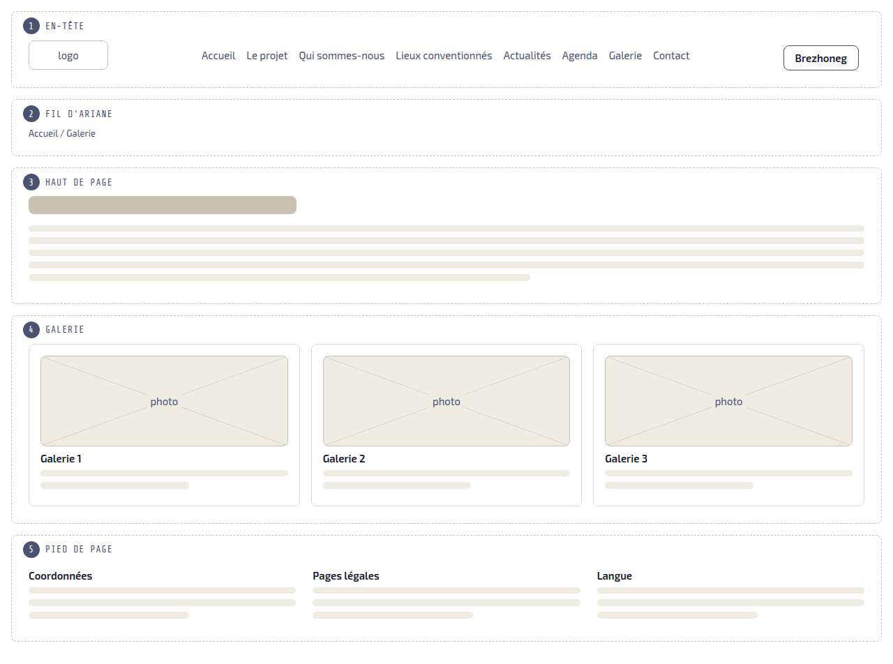
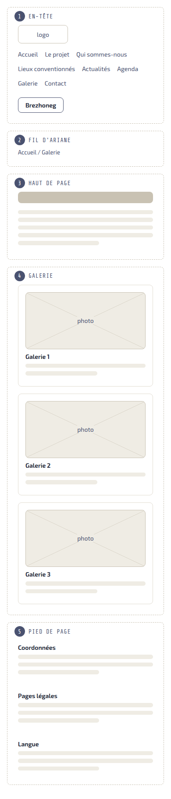
| N° | Zone | Rôle et contenu |
|---|---|---|
| 1 | En-tête | logo, menu (Accueil, Le projet, Qui sommes-nous, Lieux conventionnés, Actualités, Agenda, Galerie, Contact), lien « Brezhoneg » vers la version bretonne |
| 2 | Fil d'Ariane | Accueil, puis la page |
| 3 | Haut de page | titre Galerie de la SSA (site actuel) |
| 4 | Galerie | vignettes à leur format réel, grande image au clic, pages suivantes en liens |
| 5 | Pied de page | colonnes (Coordonnées, Pages légales, Langue) ; Le Buzuk, 39 bellevue de la Madeleine, 29600 Morlaix, 06 15 06 82 08, ssapaysdemorlaix@mailo.com ; Mentions légales, Confidentialité, Accessibilité, Plan du site ; lien Brezhoneg |
Contact
| Adresse | /contact/ |
|---|---|
| Public | partenaires, médias, habitantes et habitants |
| Recherche du public | « contacter la SSA Pays de Morlaix » |
| Action principale | écrire au collectif |
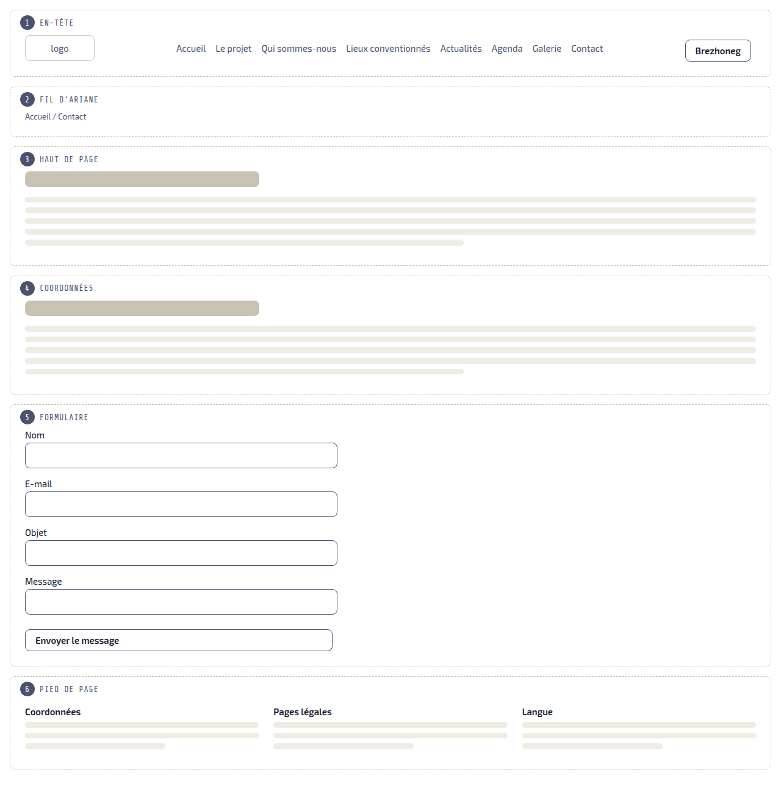
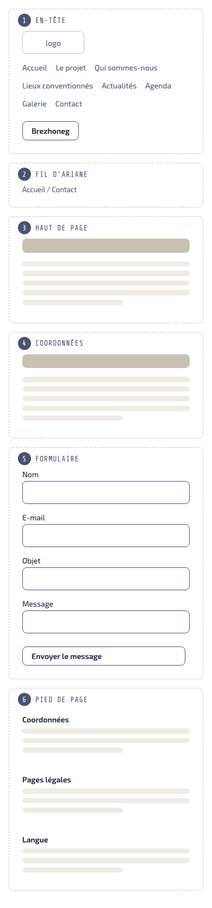
| N° | Zone | Rôle et contenu |
|---|---|---|
| 1 | En-tête | logo, menu (Accueil, Le projet, Qui sommes-nous, Lieux conventionnés, Actualités, Agenda, Galerie, Contact), lien « Brezhoneg » vers la version bretonne |
| 2 | Fil d'Ariane | Accueil, puis la page |
| 3 | Haut de page | titre Contactez-nous, chapô : pour toute question sur la Sécurité Sociale de l'Alimentation au Pays de Morlaix, contactez l'association ULAMIR-CPIE (site actuel) |
| 4 | Coordonnées | adresse (Le Buzuk, 39 bellevue de la Madeleine, 29600 Morlaix) avec lien « Itinéraire », téléphone 06 15 06 82 08, ssapaysdemorlaix@mailo.com, candidatures : candidature@mailo.com |
| 5 | Formulaire | champs (Nom, E-mail, Objet, Message), lien vers la politique de confidentialité ; bouton « Envoyer le message » |
| 6 | Pied de page | colonnes (Coordonnées, Pages légales, Langue) ; Le Buzuk, 39 bellevue de la Madeleine, 29600 Morlaix, 06 15 06 82 08, ssapaysdemorlaix@mailo.com ; Mentions légales, Confidentialité, Accessibilité, Plan du site ; lien Brezhoneg |
Mentions légales
| Adresse | /mentions-legales/ |
|---|---|
| Public | tous |
| Recherche du public | sans objet |
| Action principale | savoir qui édite et héberge le site |
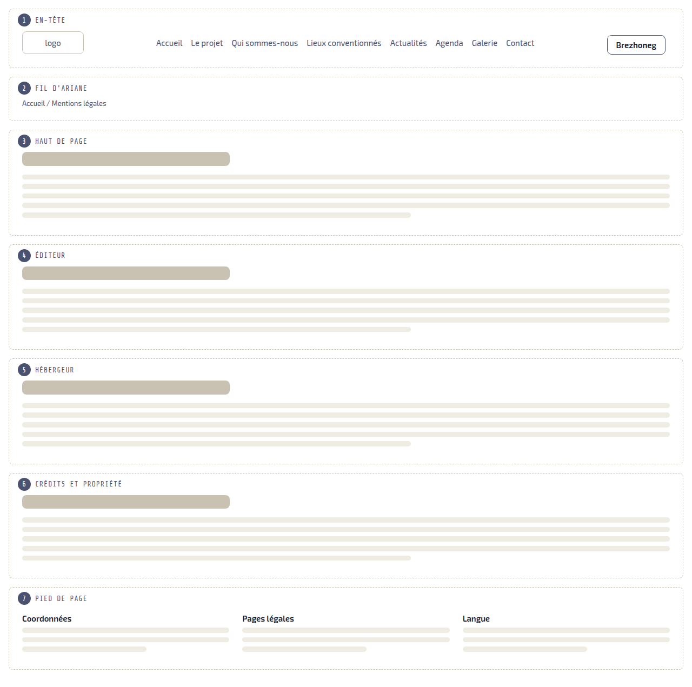
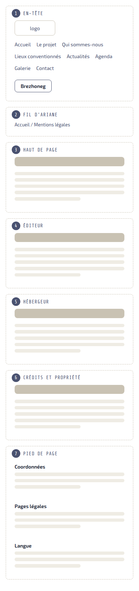
| N° | Zone | Rôle et contenu |
|---|---|---|
| 1 | En-tête | logo, menu (Accueil, Le projet, Qui sommes-nous, Lieux conventionnés, Actualités, Agenda, Galerie, Contact), lien « Brezhoneg » vers la version bretonne |
| 2 | Fil d'Ariane | Accueil, puis la page |
| 3 | Haut de page | titre Mentions légales, centré |
| 4 | Éditeur | ULAMIR-CPIE (nom légal, SIRET et siège à confirmer par Géraldine Gabillet), directrice de la publication Géraldine Gabillet |
| 5 | Hébergeur | La Capsule, centre AFPA de Morlaix, 39 Bellevue de la Madeleine, 29600 Morlaix, 07 86 44 77 52 ; bloc de texte |
| 6 | Crédits et propriété | contenus, photos et logos ; bloc de texte |
| 7 | Pied de page | colonnes (Coordonnées, Pages légales, Langue) ; Le Buzuk, 39 bellevue de la Madeleine, 29600 Morlaix, 06 15 06 82 08, ssapaysdemorlaix@mailo.com ; Mentions légales, Confidentialité, Accessibilité, Plan du site ; lien Brezhoneg |
Confidentialité
| Adresse | /confidentialite/ |
|---|---|
| Public | tous |
| Recherche du public | sans objet |
| Action principale | savoir ce que devient un message envoyé par le formulaire |
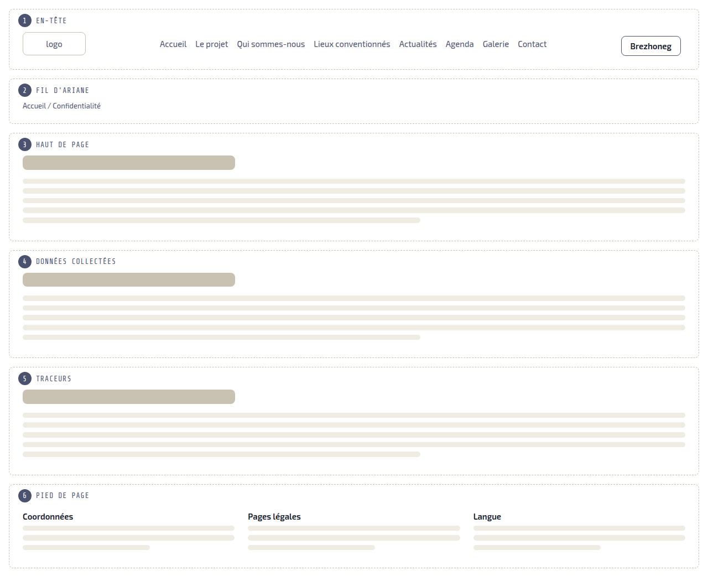
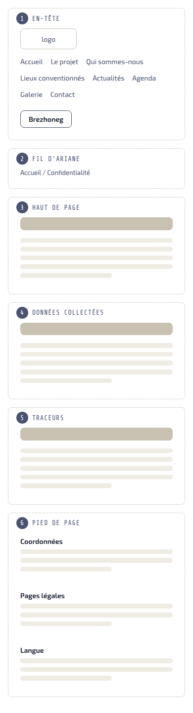
| N° | Zone | Rôle et contenu |
|---|---|---|
| 1 | En-tête | logo, menu (Accueil, Le projet, Qui sommes-nous, Lieux conventionnés, Actualités, Agenda, Galerie, Contact), lien « Brezhoneg » vers la version bretonne |
| 2 | Fil d'Ariane | Accueil, puis la page |
| 3 | Haut de page | titre Politique de confidentialité, centré |
| 4 | Données collectées | formulaire de contact seulement, message envoyé par e-mail et non conservé sur le site ; finalité, base légale, destinataire, durée, droits et contact |
| 5 | Traceurs | aucun traceur ni mesure d'audience tierce ; bloc de texte |
| 6 | Pied de page | colonnes (Coordonnées, Pages légales, Langue) ; Le Buzuk, 39 bellevue de la Madeleine, 29600 Morlaix, 06 15 06 82 08, ssapaysdemorlaix@mailo.com ; Mentions légales, Confidentialité, Accessibilité, Plan du site ; lien Brezhoneg |
Accessibilité
| Adresse | /accessibilite/ |
|---|---|
| Public | tous |
| Recherche du public | sans objet |
| Action principale | connaître le niveau d'accessibilité prouvé et signaler un problème |
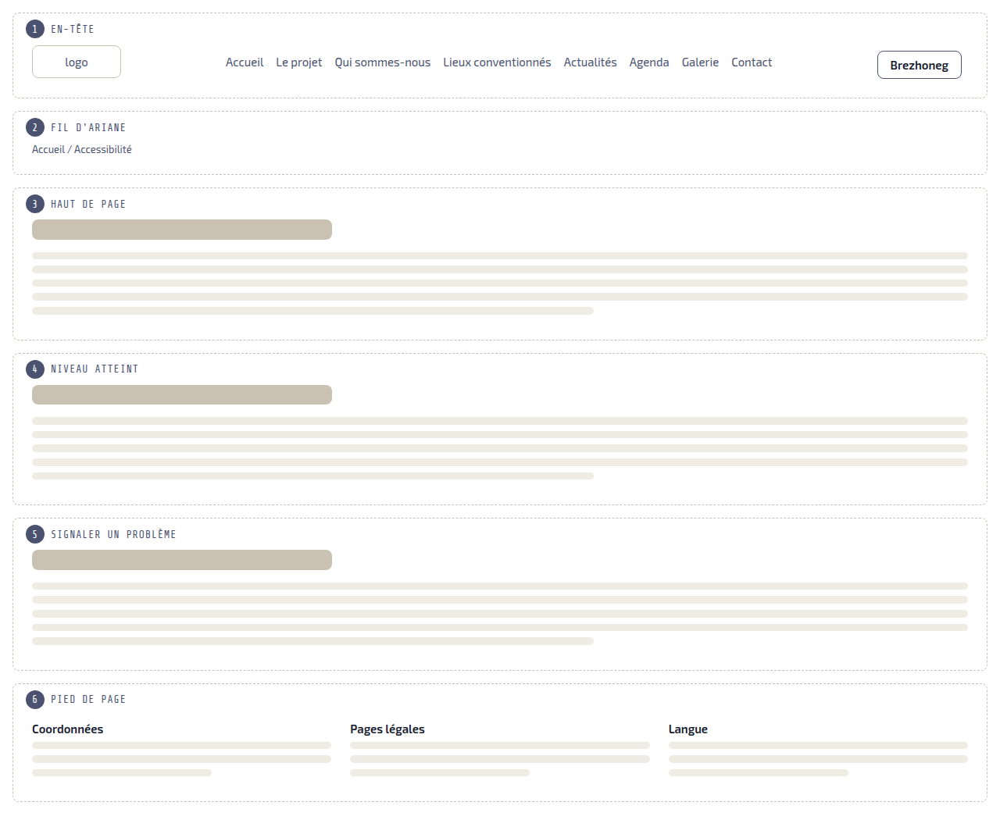
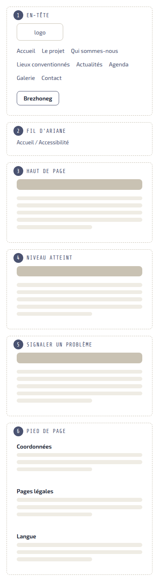
| N° | Zone | Rôle et contenu |
|---|---|---|
| 1 | En-tête | logo, menu (Accueil, Le projet, Qui sommes-nous, Lieux conventionnés, Actualités, Agenda, Galerie, Contact), lien « Brezhoneg » vers la version bretonne |
| 2 | Fil d'Ariane | Accueil, puis la page |
| 3 | Haut de page | titre Accessibilité, centré |
| 4 | Niveau atteint | référentiel WCAG 2.2, niveau prouvé par le dernier audit, date et méthode de l'audit, limites connues (dont le breton traduit automatiquement) |
| 5 | Signaler un problème | lien vers le formulaire de contact et ssapaysdemorlaix@mailo.com ; bloc de texte |
| 6 | Pied de page | colonnes (Coordonnées, Pages légales, Langue) ; Le Buzuk, 39 bellevue de la Madeleine, 29600 Morlaix, 06 15 06 82 08, ssapaysdemorlaix@mailo.com ; Mentions légales, Confidentialité, Accessibilité, Plan du site ; lien Brezhoneg |
Plan du site
| Adresse | /plan-du-site/ |
|---|---|
| Public | tous |
| Recherche du public | sans objet |
| Action principale | trouver une page |
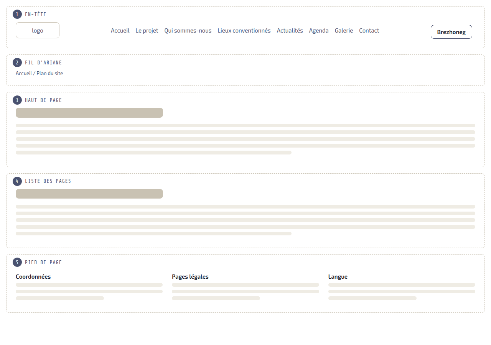
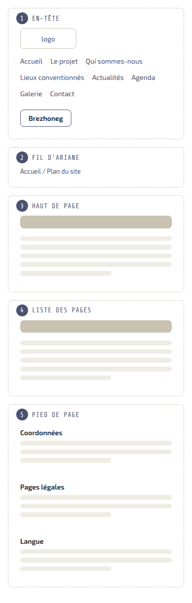
| N° | Zone | Rôle et contenu |
|---|---|---|
| 1 | En-tête | logo, menu (Accueil, Le projet, Qui sommes-nous, Lieux conventionnés, Actualités, Agenda, Galerie, Contact), lien « Brezhoneg » vers la version bretonne |
| 2 | Fil d'Ariane | Accueil, puis la page |
| 3 | Haut de page | titre Plan du site, centré |
| 4 | Liste des pages | toutes les pages publiques, avec les articles et les événements sous leur rubrique ; bloc de texte |
| 5 | Pied de page | colonnes (Coordonnées, Pages légales, Langue) ; Le Buzuk, 39 bellevue de la Madeleine, 29600 Morlaix, 06 15 06 82 08, ssapaysdemorlaix@mailo.com ; Mentions légales, Confidentialité, Accessibilité, Plan du site ; lien Brezhoneg |
Administration
| Adresse | /admin/ |
|---|---|
| Public | Géraldine Gabillet |
| Recherche du public | sans objet |
| Action principale | se connecter puis publier une actualité, un événement ou une photo |
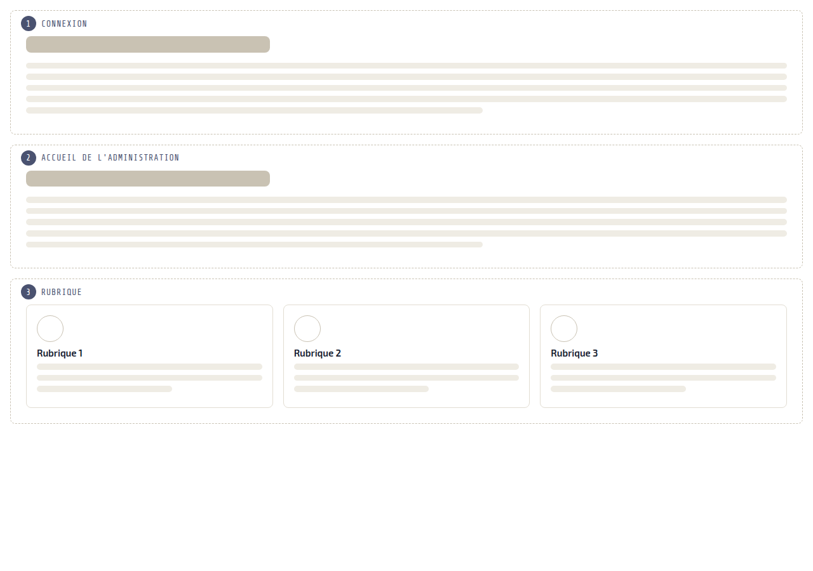
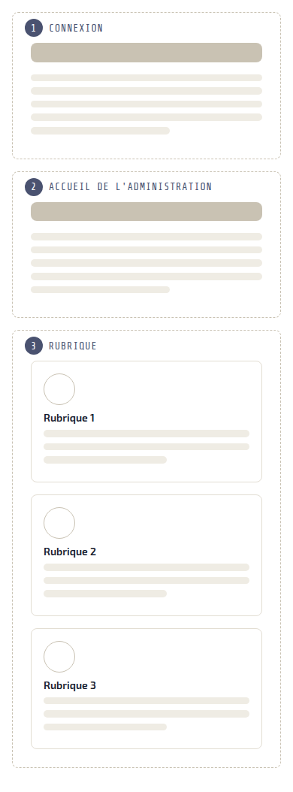
| N° | Zone | Rôle et contenu |
|---|---|---|
| 1 | Connexion | adresse e-mail et mot de passe, puis code de la double authentification ; bouton « Se connecter » |
| 2 | Accueil de l'administration | raccourcis vers les rubriques (Actualités, Agenda, Galerie, Partenaires et financeurs, Lieux conventionnés) |
| 3 | Rubrique | liste des contenus avec « Nouveau », fiche d'édition en français, état de la traduction bretonne (automatique ou corrigée) |